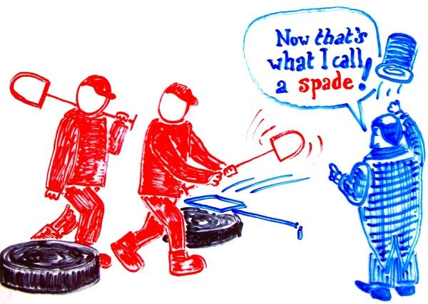
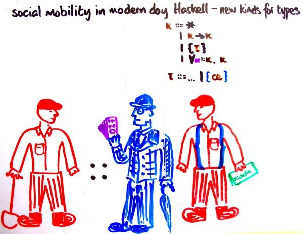

faking dependent types

Are the terms really breaking through the colon?
Not exactly. What she's doing has rather more of the flavour of
Omega, which
allows you to declare datakinds — kinds containing type-level
data, kept separate from run-time data. She retains the separation of
type-level data from run-time data, but saves you the effort of declaring
datakinds by recycling your datatypes. Just put a type in {..}, the braces
of upward mobility, and it's a kind! Now put expressions built from constructors
and variables in {..} to shift them up to the type level.
Here's an example:
data Nat = Z | S Nat
data Vec :: {Nat} -> * -> * where
VNil :: Vec {Z} x
(:>) :: x -> Vec {n} x -> Vec {S n} x
Now you can write stuff like.
vapp :: Vec {n} (s -> t) -> Vec {n} s -> Vec {n} t
vapp VNil VNil = VNil
vapp (f :> fs) (s :> ss) = f s :> vapp fs ss
type level programs
By a miracle of stunning cheapness, this old pal also goes with
the new gal:
type family (m :: {Nat}) :+ (n :: {Nat}) :: {Nat}
type instance {Z} :+ n = n
type instance {S m} :+ n = {S} (m :+ n)
vappend :: Vec m x -> Vec n x -> Vec (m :+ n) x
vappend VNil ys = ys
vappend (x :> xs) ys = x :> vappend xs ys
Mark you well that :+ lives in the type language, so it's
got to be {S} (m :+ n), not {S (m :+ n)}. The latter would treat
:+ as a lifted data constructor.
all fur coat and no knickers
Of course, it's a fiddle. Let's look at what she gives to ghc.
data Nat = Z | S Nat
data Vec :: * -> * -> * where
VNil :: Vec (SheTyZ) x
(:>) :: x -> Vec (n) x -> Vec (SheTyS n) x
vapp :: Vec (n) (s -> t) -> Vec (n) s -> Vec (n) t
vapp VNil VNil = VNil
vapp (f :> fs) (s :> ss) = f s :> vapp fs ss
type family (m :: *) :+ (n :: *) :: *
type instance (SheTyZ) :+ n = n
type instance (SheTyS m) :+ n = (SheTyS) (m :+ n)
vappend :: Vec m x -> Vec n x -> Vec (m :+ n) x
vappend VNil ys = ys
vappend (x :> xs) ys = x :> vappend xs ys
data SheTyZ = SheTyZ
data SheTyS x1 = SheTyS x1
data SheTyVNil = SheTyVNil
data (:$#$#$#:>) x1 x2 = (:$#$#$#:>) x1 x2
She erases fancy kinds to *, and translates data constructors to type constructors with
ugly names. She also declares type-level versions of your data constructors, with said
ugly names. Note, if you want to use infix data constructors, you'll need
{-# LANGUAGE TypeOperators #-} to permit the type-level version she generates.
Note that she puts lots of brackets in. Better safe than sorry. Also, you get to
write {} for {()} and {x,y} for {(x,y)}, and so on.
lifting standard stuff
You can find ShePrelude with some precooked
goodies.
pi kinds
Undertested, but you should be able to write dependent kinds like
pi (x :: *)(n :: {Nat}). {Vec {n} x} -> *
desugaring to * -> * -> * -> *, of course!
gremlins
- You can write type variables in {..} kinds, but explicit forall is
not properly implemented yet.
- Try making Vec {n} an Applicative instance and learn something!
- Name mangling is just dumb, so it's easy to engineer clashes.
- Erasure means no nice kind-checking. Edwin says I should transform
kind-checking problems into the analogous type-checking problems and
fix them up with #line pragmas to boot. Simon says we should just
implement it properly in GHC.
- She doesn't lift literals.
a more accurate picture?
